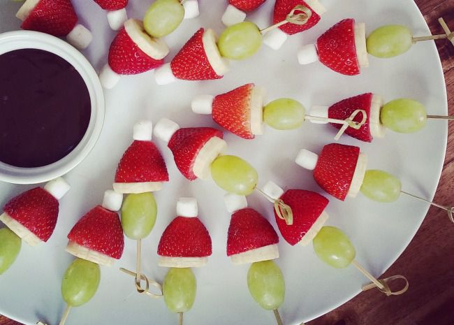

These little fruit skewers are simple to make and a great addition to your appetizers at any Christmas party.
- 24 green grapes
- 1 large banana, cut into 24 slices, or as needed
- 24 hulled strawberries, tips removed
- 24 miniature marshmallows
- 24 toothpicks
- Gather all ingredients.
- Thread 1 grape, 1 banana slice, 1 strawberry (narrow end facing up), and 1 marshmallow onto 1 toothpick to
resemble the Grinch's head in his red hat.
- Repeat with remaining grapes, banana slices, strawberries, and marshmallows.
- Serve and enjoy!